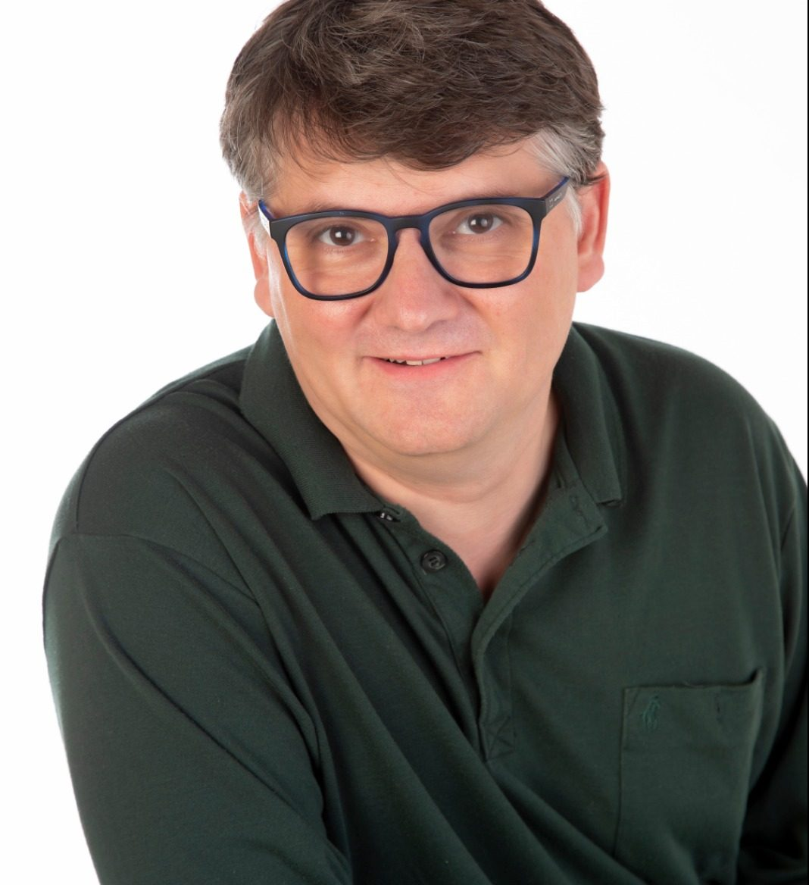
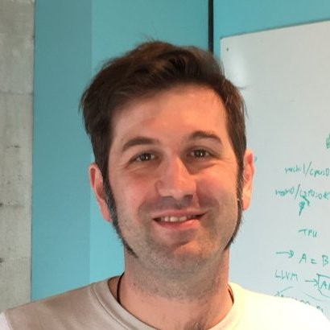
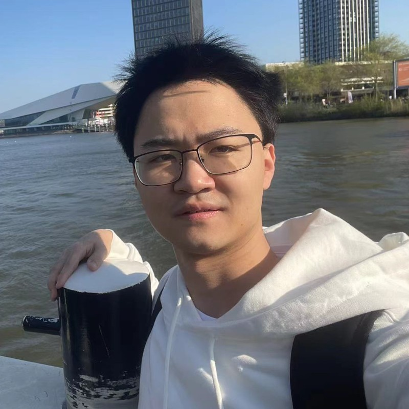
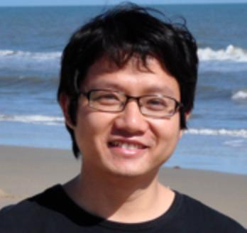

The Zero-Knowledge Proof Workshop, affiliated with the Crypto Economics Security Conference (CESC), aims to gather researchers, students, practitioners, and entrepreneurs in academia and industry interested in the design of zero-knowledge proofs and their applications in blockchain and web3. The workshop aims to provide an overview of the state-of-the-art development of ZKPs and discuss current deployment of ZKPs in various blockchain applications and to highlight specific challenges and open problems that arise in these settings.
The workshop is hosted by Berkeley RDI, a multi-disciplinary campus-wide center, focusing on advancing the science, technology and education of web3, decentralization and empowering of a responsible digital economy.
Date and Location
Oct. 30th, 2022
The Woz (430-438), Soda Hall, UC Berkeley. Or Join via Livestream
The best parking is at the UpperHearst parking structure
Registration
Join RDI Telegram for zkp workshop announcements
Organizing Committee
 |
 |
|
|---|---|---|
| Sanjam Garg | Dawn Song | Yupeng Zhang |
| UC Berkeley | UC Berkeley | Texas A&M |
Schedule
| Time | Topic |
|---|---|
| 8:30am | Check-in and coffee/tea |
| 9:20am | Opening Remarks Dawn Song (UC Berkeley) & Sanjam Garg (UC Berkeley) |
Session I: Overview of Recent Advancement in ZKP |
|
| 9:30am | Tutorial on recent development of ZKP systems [Video] Yupeng Zhang (Texas A&M University) |
| 10:10am | Recent developments and advanced topics in ZK proof systems [Video] Dan Boneh (Stanford University) |
| 10:50am | BREAK |
| 11:05am | Recent theoretical advancements of ZKP [Video] Abhishek Jain(Johns Hopkins University) |
| 11:25am |
Contributed talks: [Video] 1. Succinct Zero Knowledge for Floating Point Computations Yinuo Zhang (UC Berkeley) 2. The Reductions of Knowledge Framework Abhiram Kothapalli (CMU) 3.zkBridge: Trustless Cross-chain Bridges Made Practical Tiancheng Xie (UC Berkeley) 4. Flying with Plumo - Using Celo's zk-SNARK based light client Marek Olszewski (Celo) 5. A new Schwartz-Zippel for multilinear polynomials with application to folding schemes Ben Fish (Yale) 6. Cysic: Hardware Accelerating Zero-Knowledge Proofs Leo Fan (Cysic) |
| 12:00pm | LUNCH BREAK |
Session II: State-of-the-art ZKP Frameworks |
|
| 1:00pm | Tooling to build a zkEVM [Video] Jordi Baylina (Polygon Hermez zkEVM) |
| 1:20pm | Bignum algorithms for ZKPs [Video] Daniel Lubarov (Polygon Zero) |
| 1:40pm | zkEVM design, performance and challenges [Video] Ye Zhang (Scroll) |
| 2:00pm | BREAK |
Session III: State-of-the-art ZKP Frameworks |
|
| 2:15pm | Demystifying Zero-Knowledge Programming [Video] Howard Wu (Aleo) |
| 2:35pm | Risc0 [Video] Jeremy Bruestle (Risc0) |
| 2:55pm | Arkworks: A Rust Ecosystem for Programming zkSNARKs [Video] Pratyush Mishra (University of Pennsylvania) |
| 3:15pm | BREAK |
Session IV: Other ZKP Topics |
|
| 3:30pm | Hardening ZK Circuits with Formal Methods [Video] Yu Feng (UCSB) |
| 3:50pm | ZKP and Law [Video] Shafi Goldwasser (UC Berkeley) |
Session V: Contributed Talks |
|
| 4:10pm | Contributed talks: [Video] 1. Design considerations for building ZK Virtual Machines Bobbin Threadbare (Polygon Miden) 2. Poseidon VM: A zkApp friendly blockchain virtual machine with EVM Compatibility Shumo Chu (p0xeidon labs) 3. Accelerating MSM Operations on Web Assembly Boyuan Feng (Manta Network) 4. CycloneMSM: A Novel Architecture for Accelerating Multi-scalar Multiplication on FPGA Rahul Maganti (Jump Crypto) 5. Scalable ZK-Rollups via Fully Distributed Zero-Knowledge Proofs Jiaheng Zhang (UC Berkeley) 6. Line Point Zero Knowledge Samuel Dittmer (Stealth) 7. Hyperplonk: Plonk(up) with fast prover and high degree gates Binyi Chen (Espresso Systems) 8. Anonymous Credentials with Practical On-chain Verification and Applications to KYC in DeFi Deevashwer Rathee (UC Berkeley) 9. Proof of Consensus Uma Roy (Succinct Labs) 10. On Defining Security of Privacy-Preserving Payment System Wei Dai (Bain Capital Crypto) 11. OpenZL: Proof-System Agnostic ZKP Middleware for the Next Generation of zkApp Developers Brandon H. Gomes (P0xeidon labs) 12. Investment DAOs to Support ZKP Builders Shawn Dimantha (Hydra Ventures DAO) |
| 5:20pm |
Reception |
| 6:15pm-10:00pm |
ZKP Workshop Dinner and CESC Welcome Reception Co-hosted by p0xeidon, EigenLayer, Oasis, Scroll, zkcollective |
Meet the Invited Speakers
| Speaker | Brief Bio |
|---|---|
|
Shafi Goldwasser |
Shafi Goldwasser is the Director of the Simons Institute for the Theory of Computing, and the C. Lester Hogan Professor in Electrical Engineering and Computer Sciences at UC Berkeley. She is also the RSA Professor of Electrical Engineering and Computer Science at MIT, and a professor of computer science and applied mathematics at the Weizmann Institute of Science in Israel. Goldwasser received a BS in applied mathematics from Carnegie Mellon University in 1979, and MS and PhD in computer science from UC Berkeley in 1984. Goldwasser was the recipient of ACM Turing Award for 2012. She was also the recipient of the Gödel Prize in 1993 and another in 2001 for her work on interactive proofs and connections to approximation, and was awarded the ACM Grace Murray Hopper Award (1996), the RSA award in mathematics (1998), the ACM Athena award for women in computer science (2008), the Benjamin Franklin Medal in Computer and Cognitive Science (2010), the IEEE Emanuel R. Piore Award (2011), the Barnard College Medal of Distinction (2016), and the Suffrage Science Award (2016). She is a member of the AAAS, ACM, NAE, NAS, Israeli Academy of Science, London Mathematical Society, and Russian Academy of Science. |
|
Dan Boneh |
Dr. Boneh is a Professor of Computer Science at Stanford University where he heads the applied cryptography group and co-directs the Center for Blockchain Research. Dr. Boneh's research focuses on applications of cryptography to blockchains and to computer security. He is the author of over 200 publications in the field, and is a recipient of the 2014 ACM prize and the 2013 Godel prize. |
| 
Jordi Baylina |
Jordi is one of the strongest Solidity developers in the world and a high impact contributor in the Ethereum community. He leads the technical development of the Polygon Hermez zkRollup and is currently working on the implementation of the zkEVM. He is the co-founder of the White Hat Group, which played a major role in rescuing funds from TheDAO and Parity Multisig hacks. He’s the author of the MiniMe token contract, the elliptic curves Solidity library, as well as numerous other established contracts in the Ethereum space. Jordi is also a well-respected auditor, most notably leading teams to audit the MakerDAO Stable Coin system and Aragon project. Jordi is the co-founder of the donation platform Giveth, DAppNode, Iden3 and most recently, Polygon Hermez. |
|
Howard Wu |
Howard Wu is one of the Co-founders of Aleo. He has a background in theoretical computer science and computer security, with research interests in theoretical and applied cryptography, verifiable computing, and zero-knowledge proofs. Howard serves as Advisor to Blockchain at Berkeley, and works with Professor Alessandro Chiesa, Co-Founder of Zcash, and Professor Dawn Song of the Initiative for Cryptocurrencies and Contracts (IC3). Howard is also a managing partner of Dekrypt Capital, an investment firm focused on privacy-preserving technologies, blockchain infrastructure, and early-stage ventures. |
|
Daniel Lubarov |
Daniel Lubarov is a co-founder of Mir, now Polygon Zero, and one of the authors of Plonky2. |
| 
Jeremy Bruestle |
Jeremy Bruestle is the Chief Scientific Officer of Risc Zero, a company building open-source, zero-knowledge virtual machine that lets people build trustless, verifiable software in their favorite languages. |
| 
Ye Zhang |
Ye Zhang is the cofounder of Scroll. His research is focusing on hardware acceleration for zero-knowledge proof, theoretical proving algorithms, and zk applications. His work has been published on the toppest computer archietcture and security conferences including ISCA, Usenix Security, etc. |
|
Abhishek Jain |
Abhishek Jain is an asociate professor at Johns Hopkins University. He is broadly interested in cryptography, computer security and privacy and related topics in theoretical computer science. His recent work focuses on problems involving computations on private data and their integrity, specially in the context of new technologies such as blockchains. Before joining Johns Hopkins, he was a postdoctoral researcher at MIT and Boston University, and a consulting researcher at Microsoft Research New England. He obtained his PhD from the University of California, Los Angeles in 2012, where he was the recipient of the Symantec outstanding graduate student award. |
| 
Yu Feng |
Yu Feng is an assistant professor at UCSB, and a cofounder at Veridise, a startup for blockchain security. His research interests include programming languages, program verification, and program synthesis. He is the recipient of many distinguished/best paper awards at PLDI'18, ASE'20, CHI'21, and PLDI'22. Yu received his Ph.D. in computer science from UT Austin. |
|
Pratyush Mishra |
Pratyush Mishra is a cryptographer at Aleo. He recently completed his Ph.D. in Computer Science at UC Berkeley. His research is focused on cryptography and security, with a focus on the theory and practice of succinct cryptographic proof systems, and on efficient systems for secure machine learning. He is a co-author of the arkworks zkSNARK libraries, which are used by several academic and industrial projects. |
|
Yupeng Zhang |
Yupeng Zhang is an Assistant Professor of Computer Science and Engineering in Texas A&M University. His research is focused on applied cryptography, designing efficient zero-knowledge proof and secure multiparty computation protocols with applications to machine learning and blockchains. He is the recipient of the NSF CAREER Award, Facebook faculty research award and Google fellowship on privacy and security. Before joining Texas A&M, he was a postdoctoral researcher at UC Berkeley working with Prof. Dawn Song, and he obtained his PhD from the University of Maryland advised by Prof. Charalampos Papamanthou and Prof. Jonathan Katz. |